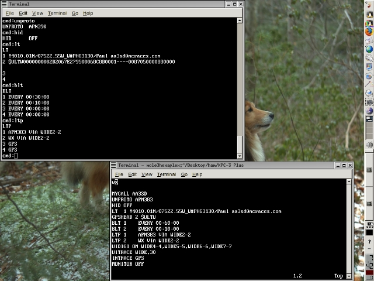

Notes:
Programming a TNC usually involves connecting a computer to it, opening a terminal session (with the correct baud rate and terminal parameters), and transmitting a series of programming commands. Here the lower window is displaying a text file containing a set of TNC commands (for the AA3SD weather station), while these commands are being issued one by one from the keyboard to the TNC in the terminal session open in the upper window.